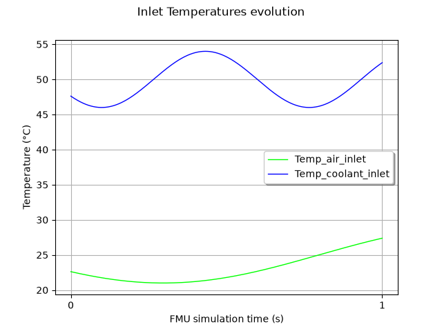
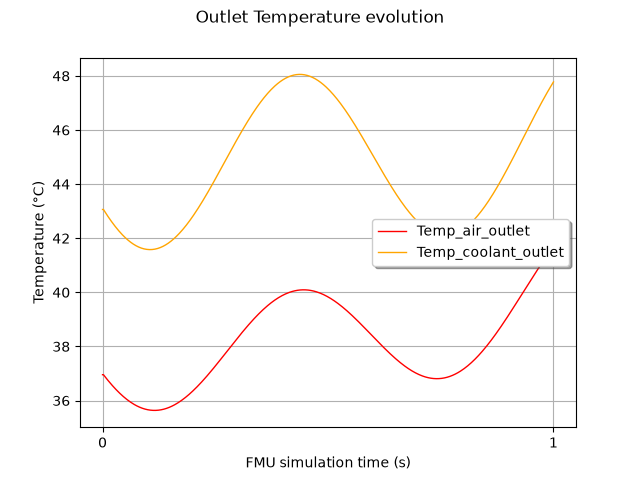

Note
Go to the end to download the full example code.
Run simulations with FMUFieldFunction#
While FMUPointToFieldFunction deals with scalar inputs
(parameters) only, the FMUFieldFunction
enable you to define time-dependant inputs to study their effects on
time-dependent outputs.
We consider a model of heat exchanger. Basically, it models a flow of liquid coolant flowing through tubes, which are cooled by a flow of air. Here, we define time-dependent temperatures for air and coolant at inlet, and we study the evolution the temperature of air and coolant at the outlet.
Note
In Modelica models, one can model time-dependent variables with table components. To use your model with OTFMI, you must set your time-dependent input as scalar inputs in the model. The temporal dependency is managed by OTFMI.
import math as m
import otfmi
import otfmi.example.utility
import openturns as ot
import openturns.viewer as otv
Prerequisites#
We use the HeatExchanger example,
with the function FMUFieldFunction.
path_fmu = otfmi.example.utility.get_path_fmu("HeatExchanger")
Define the FMUFieldFunction#
We define the model with a FMUFieldFunction object, with 2 inputs and 2 outputs. You can change the time mesh (input_mesh and output_mesh). You can also set start and final times explicitly. For this example, We keep the time defined in the FMU.
inputs_vars = ["Temp_air_inlet", "Temp_coolant_inlet"]
outputs_vars = ["Temp_air_outlet", "Temp_coolant_outlet"]
HX_model = otfmi.FMUFieldFunction(path_fmu,
inputs_fmu=inputs_vars,
outputs_fmu=outputs_vars)
print(HX_model)
FieldFunction :
class=PythonFieldFunction name=OpenTURNSFMUFieldFunction
Define the time grid#
The first work consists in defining the time grids on which the model will be evaluated (for both input and output fields). You can recover the default time grids defined in the model.
If you want to override this with your own timegrid,
you can use openturns.RegularGrid
Define the inputs#
We want to drive inlet air and coolant temperatures, to see their effects on outlet temperatures. Inputs are defined in one list. Each element is itself a list, giving for each time the values of the inputs. Here we suppose a sinusoidal evolution of temperatures. You can change the frequency (Hz). The phase is randomly set.
Note
The inputs given to otfmi must be declared as input in the Modelica model. If you try to change parameters, it won’t work.
freq_air = 0.5
omega_air = 2 * m.pi * freq_air
freq_cool = 1.5
omega_cool = 2 * m.pi * freq_cool
phi = 3.78
input_timeseries = ot.Sample(0, 2)
for time in input_mesh.getVertices().asPoint():
Temp_air_inlet = 25.0 + 4.0 * m.sin(omega_air * time + phi)
Temp_coolant_inlet = 50.0 + 4.0 * m.sin(omega_cool * time + phi)
input_timeseries.add([Temp_air_inlet, Temp_coolant_inlet])
graph_in = ot.Graph("Inlet Temperatures evolution",
"FMU simulation time (s)",
"Temperature (°C)", True)
curve_TairIn = ot.Curve(input_mesh.getVertices(), input_timeseries[:, 0])
curve_TairIn.setColor("green")
graph_in.add(curve_TairIn)
curve_TcoolIn = ot.Curve(input_mesh.getVertices(), input_timeseries[:, 1])
curve_TcoolIn.setColor("blue")
graph_in.add(curve_TcoolIn)
graph_in.setIntegerXTick(True)
graph_in.setLegends(inputs_vars)
graph_in.setLegendPosition("center right")
view = otv.View(graph_in)

Run the simulation
outlet_temperatures = HX_model(input_timeseries)
print(outlet_temperatures[-5:])
[ Temp_air_outlet Temp_coolant_outlet ]
0 : [ 41.4999 47.5558 ]
1 : [ 41.5455 47.612 ]
2 : [ 41.5906 47.6675 ]
3 : [ 41.6352 47.7225 ]
4 : [ 41.6793 47.7767 ]
See results
graph_out = ot.Graph("Outlet Temperature evolution",
"FMU simulation time (s)",
"Temperature (°C)", True)
curveTairOut = ot.Curve(output_mesh.getVertices(), outlet_temperatures[:, 0])
curveTairOut.setColor("red")
graph_out.add(curveTairOut)
curveTcoolOut = ot.Curve(output_mesh.getVertices(), outlet_temperatures[:, 1])
curveTcoolOut.setColor("orange")
graph_out.add(curveTcoolOut)
graph_out.setIntegerXTick(True)
graph_out.setLegends(outputs_vars)
graph_out.setLegendPosition("center right")
view = otv.View(graph_out)

Alternative : Define the FMUFieldToPointFunction#
The previous function support timeseries as inputs and outputs.
If you are interested in only a scalar output, OTFMI offers a
variant FMUFieldToPointFunction, to get only and directly
the output at the last timestep.
HX_model = otfmi.FMUFieldToPointFunction(path_fmu,
input_mesh,
inputs_fmu=inputs_vars,
outputs_fmu=outputs_vars)
Run the simulation
[41.6793,47.7767]
Total running time of the script: (0 minutes 0.263 seconds)